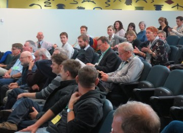

Highlights from the twittersphere #alass13
Highlights from the twittersphere #alass13
- By ianmcd85@hotmail.com
- June 18, 2013
- Tags: Blogs & news Communications
By Ian McDonald -
On Wednesday and Thursday last week, colleagues from all around Australia discussed the varying uses of the Atlas of Living Australia and the ways in which its infrastructure, resources and data is being used now and into the future. After multiple presentations, an evening panel discussion and lots of rivetting questions and comments - the symposium was thoroughly enjoyed by all who attended. If you were not able to attend, the abstracts from each of the presentations can be uploaded here and we endeavour to make the presentations available on our website, so keep posted.
The Twitter hashtag for the event was #alass13 and while Twitter is still a relatively new medium for many folk, I thought I’d highlight some of the more useful tweets from our many avid tweeters in the audience. Including our Director’s very first tweet from his personal account - nice work.
‘John La Salle @JohnLaSalle1 12 Jun - Learning to tweet. Trying again to see if this goes to the right place. #alass13‘
Thanks to all those who tweeted throughout the symposium and kept the virtual world alive with discussion. If you’d like to learn more about using Twitter please feel free to email the Atlas team at info@ala.org.au and they will point you in the right direction for help.
SCROLL TO BOTTOM TO READ IN ORDER.
Ely Wallis @elyw 14 Jun - My talk Data out, data in talk given at #alass13 now on @slideshare http://www.slideshare.net/ewallis/data-out-data-in-the-ala-and-the-field-guide-apps-to-australian-fauna-project … cc @atlaslivingaust
Arthur Chapman @arthur_chapman 13 Jun - Today at #alass13, I found the Citizen Science talks inspiring with lots of new and exciting apps. the future of the ALA looks promising.
Margaret Cawsey @EMCawsey 13 Jun - The #TRIN Wiki is a working example of doing taxonomy in the cloud #alass13
Jim Croft @jim_croft 13 Jun - Kevin Thiele. Perhaps taxonomy could be done entirely within the #ALAu. #alass13
Jim Croft @jim_croft 13 Jun - @gifry The #alau Australian Seedbank Partnership Portal is a model for living collections, currently under consideration #alass13
Margaret Cawsey @EMCawsey 13 Jun - @piers_higgs the BDRS has come in for some high praise from the citizen scientists #alass13
Jim Croft @jim_croft 13 Jun - @elyw encouraging people to use OzAtlas, https://m.ala.org.au/ Download it from your Android/iThing store #alass13
Jim Croft @jim_croft 13 Jun - @elw raises issue of taxonomic name matching. Links to the Australian Fauna directory - incomplete, many names not yet available. #alass13
Jim Croft @jim_croft 13 Jun - Ely Wallis @elyw describing the iOS/Android Field Guide to Victorian Fauna app. http://museumvictoria.com.au/discoverycentre/mv-field-guide-app/ … (warning: it’s big) #alass13
Beth Mantle @froggybeth 12 Jun - Trevor Booth: the ALA is quick, cheap, simple and available now #whatareyouwaitingfor #alass13
START READING FROM HERE AND GO UP.